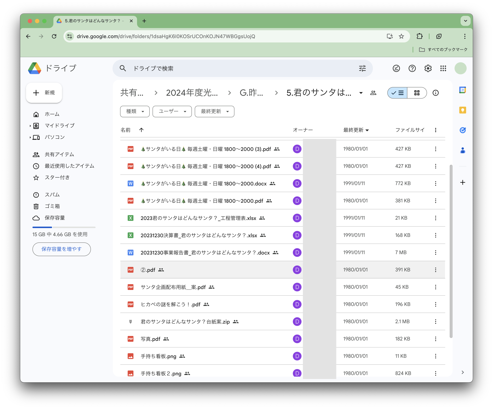
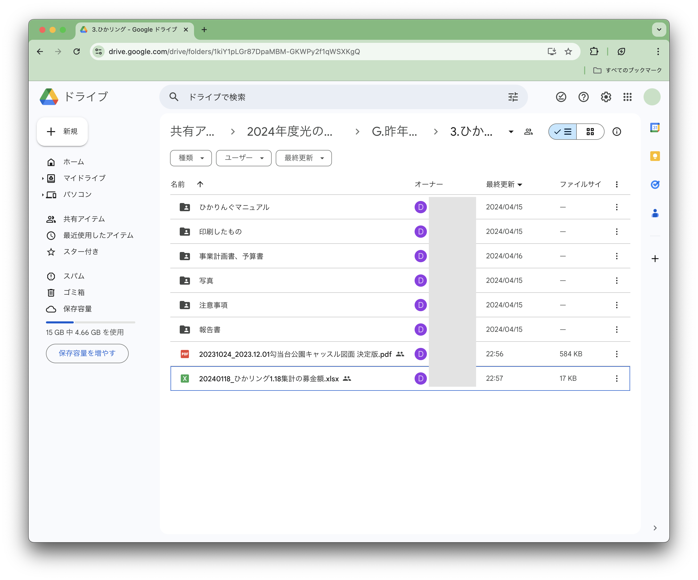

まず最初に（これだけは全員読んで）
光ペ関係で作成したファイルは必ず共有ドライブにアップするようにしましょう！ みんなの成果はみんなが見れるように...！！
ファイルをアップする時には必ず、どのフォルダに何が入ってるか、すぐ分かるようなアップロード・整理を心がけてください。そうしないとどうなるか。。。
- どこに何があるか分からない → 本人不在の時、各種会議で資料を出せない。
- ぐちゃぐちゃ過ぎて、編集して良いのか、そのまま残さなきゃいけないのか、消して良いのかが分からない → 無駄なファイルがどんどん残ってエントロピー爆増し続ける。だるい。
- 引き継ぎの時、学生リーダーたちがめっちゃ苦労する → めっちゃ苦労した。

めっちゃ見づらい・・・
こりゃ嫌ですね。それがルールを決めてやると・・・

引くほど見やすい！！！大感動！！！大感涙！！！
- どこに何があるかめっちゃ分かる → 本人不在の時、各種会議で資料をめっちゃ出せる。
- 整い過ぎて、編集して良いのか、そのまま残さなきゃいけないのか、消して良いのかがめっちゃ分かる → 無駄なファイルがどんどん残ってエントロピー爆増し続けない。だるくない。むしろ気持ちいい。
- 引き継ぎの時、学生リーダーたちがめっちゃ苦労しない → めっちゃ苦労しない will。
めっちゃ感動。それなので、みんなやりましょう。
ここから、Googleドライブにファイルをアップする具体的な手順について書いていきます。分かる人は読まなくていいけど、下の説明で赤の太字で書いてあることは必ず読んで守ってください！！お願いします！！！
ファイルをアップするまでのステップ
ファイルをアップするまで、ファイルはアップされないんです。だからこそ、ファイルをアップしなければならない。
Step 1. アップファイルの準備
- アップロードするファイルを用意する。
- 何を書いたファイルなのか、どんなファイルかを確認する。
- 共有ドライブに入る。
- ファイルを入れるフォルダを選ぶ。
- 次に、ファイルをアップする（Step 2へ）。
アクセス権無いときは、ログインしているアカウントとユース部会に提出したアカウントが同じかどうかを確認。それでも解決しない場合、デジタル局長に連絡。
Step 1.1. 新しくフォルダを作る
- ドライブの画面内の「＋」アイコンから「新しいフォルダ」、フォルダを作る。
- フォルダ名は「サンタ企画予算書」「サンタ企画デザイン案」など、誰が見てもわかりやすい名前にする。
- 次に、ファイルをアップする（Step 2へ）。
Step 2. ファイルアップロード
- 画面内の「＋」アイコンから、アップしたいファイルを選んでアップする。PCの場合、ドラッグアンドドロップでもいける。
- 最後に、ファイル名をつける（Step 3へ）。
Step 3. ファイル名をつける
- アップしたファイルの右端の3つの丸のアイコンをタップし、ファイル名を変更する。
- ファイル名は必ず「日付_ファイルの内容」で統一する。
（必ず徹底して！じゃないとどれが新しいデータで何書いてあるかわかんなくなる！） - ファイルの内容はひと目で見て分かるようなネーミングにする。
- 同じ日付、同じ内容にってしまう場合は、ファイル名の後ろに数字を付けてバージョン管理をする。
- 終わりンゴ。
「20240803_第1億回定例会次第」など。※ドライブの「最終更新」日時は、移動とかしても日付更新されるので、ここではアテになりません。
「20240803_俺の今世紀最大の自信作」みたいなのはおもろいけどダメ。
「20240803_サンタ企画素案_1」、「20240803_サンタ企画素案_2」など。
用語の確認
もしコレ読んでてわからない時用の用語集（ﾃﾞﾃﾞｰﾝ）
| 用語 | 意味 |
|---|---|
| ファイル | パソコンやスマホで作った書類、画像など様々なデータ。pdfファイル(.pdf)、Wordファイル(.docx)、Excelファイル(.xlsx)、パワポファイル(.pptx)、png画像(.png)、jpeg画像(.jpeg)、mp3ファイル(.mp3)、CSVファイル(.csv)、Adobe Illustratorファイル(.ai)など、パソコンにあるデータ全て。 |
| フォルダ | いろんなファイルを入れている入れ物のこと。ディレクトリとか言ったりもする。 |
| ドライブ | 記憶媒体の意味。HDD（Hard Disk Drive）とか、SSD（Solid State Drive）とか。特にここでは、ファイルとフォルダをインターネット上に保管し、複数人で共有できるサービスであるGoogle Driveを指す。 |
| ファイルをアップするまで、ファイルはアップされないんです。だからこそ、ファイルをアップしなければならない。 | ファイルをアップしていないからあげた方が良いという意味。tautologyという修辞技法で、現在は小泉構文でまかり通る。 |
不明点・お問い合わせ・ご相談・おしゃべり・お戯れ
ワシ（広報局長）にLINE投げるか突撃して。